The agents we have built so far are bounded by what is already in their training data. They cannot answer questions about a document the user uploaded yesterday, cite a policy that was published last week, or remember what they discussed with the user in their last conversation. These are real limits, and they show up the moment an agent has to work with information the model has not seen.
This chapter is about closing those gaps. We start with retrieval, the mechanism for finding relevant information from outside the model’s training and bringing it into the agent’s context at the right moment. Retrieval is what enables an agent to answer questions about documents, policies, codebases, and other external knowledge sources.
From retrieval, we move to memory, which is retrieval applied to the agent’s own past experiences. Memory is what lets an agent remember user preferences across sessions, recall what it tried on a previous attempt, and build context that compounds rather than resets. Together, retrieval and memory turn an agent from a stateless reasoner into a system that can know things and remember them.
Retrieval in agent and chat applications is a mechanism for obtaining knowledge or memories stored in external, long-lived storage. Unstructured knowledge includes conversation or task histories, facts, preferences, and other items needed to contextualize a prompt. Structured knowledge, normally stored in databases or files, is accessed through native functions or plugins.
Memories may include previous conversation threads, past agent experiences, facts or preferences about the user, and other experiential information. The agent can, in principle, access arbitrarily large memory stores because the storage lives outside the LLM, in a database, vector store, or filesystem that grows independently of any model’s context window.
What is bounded is what the agent can use on any single LLM call. The context window is the limit on how much fits into a single prompt, and modern models range from roughly 200,000 to over a million tokens. Retrieval is the bridge between unbounded external storage and bounded per-call context: the agent searches the larger store and brings only the most relevant pieces into the current call’s context.
Table 6.1 demonstrates examples of different forms of knowledge and memory, their source, how they may be stored, and the retrieval/search process for augmentation.
| Source |
Storage format |
Retrieval mechanism |
| Memory (short-term)—previous conversation thread |
Agent/user conversation thread stored as text |
Provided automatically as message history |
| Memory (long-term)—previous user conversations |
Summarized memories stored as text or in a vector database (semantic) |
Semantic/vector search |
| Knowledge (unstructured), documents (PDFs) |
Vector database (semantic) and text document index |
Semantic/vector search and keyword search |
| Knowledge (structured), database tables, structured logs |
Same format as source |
Relational database queries, log parsing |
Memory and knowledge, as shown in figure 6.1, are elements used to add further context and relevant information to a system prompt or agent instructions. Agent and prompt instructions can be augmented with context ranging from information about a document to previous tasks, conversations, and other related information. In both cases, knowledge and memory context are obtained from external sources, such as vector databases, document indexes, databases, and other places where data can be stored and retrieved through search.
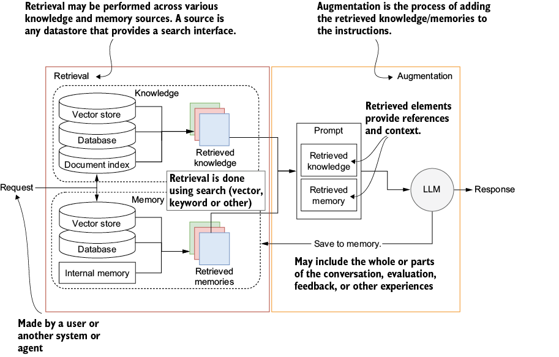
Retrieval and augmentation are key elements for exposing knowledge and memory to agents. Retrieval is the process of searching for information given some form of context, typically the user’s input. Augmentation is the process of providing retrieved information as additional context in a prompt to an LLM.
Knowledge is external information, such as documents, PDFs, database tables, and other external sources. Likewise, memory is the structured or unstructured capture of experiences that may provide additional context to help answer a question or achieve a goal. Both knowledge and memory data sources rely on retrieval to query the structured or unstructured information they contain.
The combined retrieval and augmentation mechanism, called retrieval-augmented generation (RAG), has become a standard for providing relevant context for a prompt. The exact mechanism that powers RAG also powers memory and knowledge, and it’s essential to understand how it works.
RAG has become a popular mechanism for document chat and question-and-answer applications. The user supplies a document, such as a PDF, the system embeds it into a vector store using an embedding model, and a separate large language model generates the answer using the chunks retrieved from that store. The embedding model and the LLM are two different models doing two different jobs: the embedder encodes text into vectors for similarity search, and the LLM produces the final response.
Figure 6.2 breaks RAG into two phases: ingestion and retrieval. In ingestion, documents are loaded, transformed into context chunks, embedded as vectors, and stored in a searchable vector database. In retrieval, a user query is embedded into the same vector space, the most similar chunks are pulled from the database, and those chunks become context for the LLM to generate an answer.
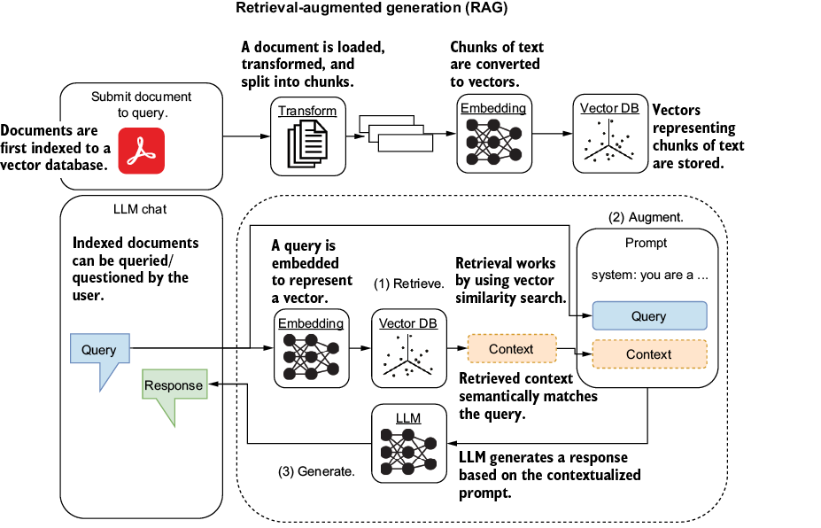
A user can query previously ingested and indexed documents by submitting a query. The query is then embedded as a vector representation to search for similar chunks in the vector database. Similar content is then used as context and added to the prompt as augmentation. The prompt is sent to an LLM, which can use that context to help answer the query.
For example, if the user queries “capital of France,” that query is converted to a dense vector representation using an embedding model. The vector is then used to find similar matches in a vector database. When a match is found (“capital of France is Paris”), it is returned and added to the prompt fed to the LLM, which uses that context to give an answer that is correct and grounded in retrieved knowledge.
A vector database is a specialized data store designed for similarity search over vectors rather than exact lookup over rows. Traditional databases answer questions like “find the row where user_id equals 42.” Vector databases answer questions like “find the rows whose vectors are most similar to this query vector,” ranked by similarity score.
The “dense” in dense vector database refers to the embeddings themselves. Dense vectors pack semantic meaning into every dimension (typically 384 to 3,072 floating-point numbers per vector), unlike sparse vectors which are mostly zeros. Popular vector databases in 2026 include Pinecone, Qdrant, Weaviate, Turbopuffer, and pgvector (a Postgres extension that adds vector search to a database you may already be running).
LLMs are trained on vast sources of information, but their internal knowledge is fixed at training time. An agent built on a model with a 2025 training cutoff cannot tell you today’s stock price, the current weather in Calgary, the latest exchange rate between CAD and USD, last night’s game scores, the most recent version of your company’s pricing policy, or anything that happened after the cutoff.
Retrieval-augmented generation closes this gap by allowing the agent to retrieve current information from external sources at query time. The model is no longer the only source of knowledge in the system; it is the reasoning layer on top of knowledge retrieved from documents, databases, APIs, or anywhere else the agent can access. This shifts the agent from “what the model remembers from training” to “what the model can reason about given the current context.”
Unstructured memory and knowledge concepts often rely on semantic similarity search rather than keyword matching, following the retrieval pattern shown in figure 6.2. Semantic search compares the meaning of a query to the meaning of stored content using dense vector embeddings, so a query about “vehicles” can match content about “cars” even though the words are different.
Figure 6.3 shows how memory uses the same embedding and vector database components, but with conversations as input rather than preloaded documents. Parts of a conversation are embedded and saved in the vector database, and later turns of the same conversation (or future conversations) can retrieve the relevant previous content based on semantic similarity.
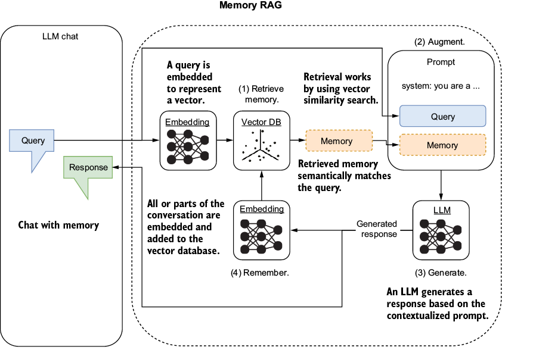
The retrieval pattern and document indexing are nuanced and require careful consideration to be used successfully. This requires understanding how data is stored and retrieved, which we’ll begin to unpack in the next section.
Document indexing transforms a document’s information so it can be semantically recovered. How the index will be queried or searched also plays a role, whether searching for a particular set of words or wanting to match phrase for phrase.
Semantic search finds content that matches a query by meaning rather than by surface keywords, which is powerful and eliminates the need to construct keyword queries or maintain synonym lists. As covered in the previous section, this is how RAG and memory retrieval both work: they use the same dense vector embeddings to compare the meaning of a query against stored content.
The capability has three pitfalls worth naming. Semantic similarity does not mean semantic correctness, so a result can match the meaning of the query closely while being factually wrong (a search for “best treatment for migraines” can return content that sounds like treatment advice but is outdated, incorrect, or from an untrustworthy source). The retrieval has no view into truth, only into similarity.
Most vector searches return a fixed top-K, typically the five or ten most similar matches. Relevant content at rank 11 gets dropped, which can matter when the query has multiple distinct correct answers or when the relevant information is phrased less similarly than expected. Tuning K and re-ranking with secondary signals are common mitigations.
The search itself is approximate rather than exact. Vector databases use approximate nearest neighbor algorithms that trade some accuracy for speed, so the “most similar” result is “very likely the most similar” rather than guaranteed. For most applications, this is fine, but it is worth knowing when debugging unexpected retrieval misses.
With semantic search, we can search for the concept or meaning rather than relying on exact keywords or phrases. Take, for example, the search term “dog.” If we were searching for the word, we would only find documents that mention it. Using a semantic representation of “dog” allows us to match documents that may mention dogs. It can also match particular breeds like a cockapoo, or even puppy care and related activities.
Before we look at semantic embeddings, it helps to see a simpler approach that does not capture meaning. Term Frequency-Inverse Document Frequency (TF-IDF) is a classic technique that converts text into a sparse vector based on which words appear and how distinctive each word is across a corpus. It is not a semantic representation, but it is a useful starting point because the mechanics are easy to follow.
TF-IDF measures term importance, not meaning. A query about “vehicles” will not match a document about “cars” under TF-IDF because the words are different, even though the meaning is the same. This is the limitation that semantic embeddings (covered in the next section) are designed to solve.
Semantic embeddings come from neural networks trained to map text into a dense vector space where similar meanings end up near each other regardless of surface vocabulary. The training is what gives semantic embeddings their power and distinguishes them from term-counting approaches like TF-IDF. We start with TF-IDF because the implementation is simpler and then move to semantic embeddings, where the real retrieval performance comes from.
Open the chapter_06 folder in a new Visual Studio Code (VS Code) workspace. Create a new environment, and use pip to install the requirements.txt file with all the chapter dependencies. If you need help setting up a new Python environment, consult appendix A.
Now open the document_vector_similarity.py file in VS Code, and review the top section in listing 6.1. This example uses TF-IDF. This numerical statistic reflects how important a word is to a document in a collection or set of documents. It increases proportionally to the number of times the word appears in the document and is offset by the word’s frequency in the document set. TF-IDF is a classic measure for understanding the importance of a word within a set of documents.
import plotly.graph_objects as go
from sklearn.feature_extraction.text import TfidfVectorizer
from sklearn.metrics.pairwise import cosine_similarity
documents = [ #1
"The sky is blue and beautiful.",
"Love this blue and beautiful sky!",
"The quick brown fox jumps over the lazy dog.",
"A king's breakfast has sausages, ham, bacon, eggs, toast, and beans",
"I love green eggs, ham, sausages and bacon!",
"The brown fox is quick and the blue dog is lazy!",
"The sky is very blue and the sky is very beautiful today",
"The dog is lazy but the brown fox is quick!"
]
vectorizer = TfidfVectorizer() #2
X = vectorizer.fit_transform(documents) #3
Let’s break down TF-IDF into its two components using the sample sentence “The sky is blue and beautiful” and focusing on the word blue.
Term Frequency (TF) measures how frequently a term occurs in a document. Because we’re considering only a single document (our sample sentence), the simplest form of the TF for blue is the number of times blue appears in the document divided by the total number of words in the document. Let’s calculate it:
Number of times blue appears in the document: 1
Total number of words in the document: 6
TF = 1 ÷ 6TF = .16
Inverse Document Frequency (IDF) measures how important a term is within the entire corpus. It is calculated by dividing the total number of documents by the number of documents containing the term and then taking the logarithm of that quotient. In practice, implementations add a small constant to the denominator (log(N/(n+ε))) to avoid division by zero when a term does not appear in any document:
IDF = log(Total number of documents ÷ Number of documents containing the word)
In this example, the corpus is a small collection of eight documents, and blue appears in four of these documents:
IDF = log(8 ÷ 4)
Finally, the TF-IDF score for blue in our sample sentence is calculated by multiplying the TF and the IDF scores:
TF – IDF = TF × IDF
Let’s compute the actual TF-IDF value for the word blue using the example provided. First, the term frequency (how often the word occurs in the document) is computed as follows:
TF = 1 ÷ 6
Assuming the base of the logarithm is 10 (commonly used), the inverse document frequency is computed as follows:
IDF = log10(8 ÷ 4)
Now let’s calculate the exact TF-IDF value for the word blue in the sentence “The sky is blue and beautiful”:
The Term Frequency (TF) is approximately 0.1670.
The Inverse Document Frequency (IDF) is approximately 0.301.
Thus, the TF-IDF (TF × IDF) score for blue is approximately 0.050.
This TF-IDF score indicates the relative importance of the word blue in the given document (the sample sentence). It does this within the context of the specified corpus (eight documents, with blue appearing in four of them). Higher TF-IDF scores imply greater importance.
TF-IDF is used here because it is simple to apply and understand. With elements represented as vectors, we can measure document similarity using cosine similarity, which measures the cosine of the angle between two nonzero vectors. This indicates how similar they are regardless of vector magnitude.
Cosine similarity is the default choice for both sparse vectors (TF-IDF) and dense vectors (semantic embeddings) because it ignores magnitude and focuses on direction. Two documents that share the same proportional mix of features are treated as similar, even if one is much longer than the other, which aligns with what we usually want from retrieval. The alternative metrics (Euclidean distance, dot product) are sensitive to magnitude, which can be useful in some retrieval setups but often introduces noise due to differences in document length.
Cosine similarity works well on TF-IDF in practice but has known limitations when vectors are extremely sparse. With sparse vectors, two documents can share only a few terms and still register as similar by angle, which can produce false matches due to rare-term overlap. Semantic embeddings are dense by design, which is part of why retrieval quality improves when we move from TF-IDF to semantic embeddings in the next section.
Figure 6.4 shows how cosine distance compares the vector representations of two pieces of text or text documents. Cosine similarity returns a value from –1 (not similar) to 1 (identical). Cosine distance is a normalized value ranging from 0 to 2, derived by subtracting the cosine similarity from 1. A cosine distance of 0 means identical items, and 2 indicates complete opposites. In this example, the vectors are nonnegative and lie in [0, 1], so the similarities will be between 0 and 1.
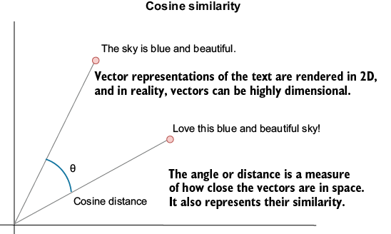
Before walking through listing 6.2, the underlying mechanics are worth surfacing because the code makes more sense once you see what is being computed. Each sentence in the corpus is converted into a vector by TF-IDF, where each position in the vector corresponds to one term in the corpus vocabulary. The value at each position is the TF-IDF score for that term in that sentence, so a sentence with five hundred unique terms in a corpus of ten thousand unique terms becomes a vector of length ten thousand, mostly zeros, with values at the positions corresponding to the sentence’s terms.
The cosine similarity function compares vectors pairwise. Comparing every sentence against every other sentence produces a matrix where row i, column j contains the similarity score between sentence i and sentence j. The matrix is symmetric (similarity from A to B equals similarity from B to A) and has ones on the diagonal (every sentence is identical to itself).
Listing 6.2 shows this computation using the cosine_similarity function from scikit-learn. The computed matrix is stored in the cosine_similarities variable, and the input loop allows the user to select a document to view its similarity scores relative to the others. Looking at a row of the matrix tells you how similar one document is to every other document in the corpus.
cosine_similarities = cosine_similarity(X) #1
while True: #2
selected_document_index = input(f"Enter a document number
➥ (0-{len(documents)-1}) or 'exit' to quit: ").strip()
if selected_document_index.lower() == 'exit':
break
if not selected_document_index.isdigit() or
➥ not 0 <= int(selected_document_index) < len(documents):
print("Invalid input. Please enter a valid document number.")
continue
selected_document_index = int(selected_document_index) #3
selected_document_similarities = cosine_similarities[selected_document_index] #4
# code to plot document similarities omitted
Figure 6.5 shows the output of running the sample in VS Code (press F5 on the keyboard for debugging mode). After you select a document, you’ll see the similarities among the various documents in the set. A document will have a cosine similarity of 1 with itself. Note that you won’t see a negative similarity because of the TF-IDF vectorization. We’ll look later at other more sophisticated ways to measure semantic similarity.
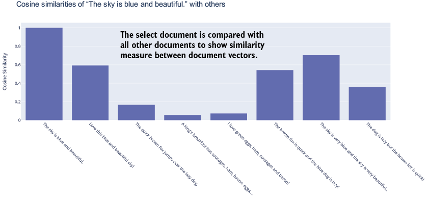
The method of vectorization dictates the measure of semantic similarity between documents. Before we move on to better methods for vectorizing documents, we’ll examine how vectors are stored for vector similarity searches.
After vectorizing documents, they can be stored in a vector database for later similarity searches. To show how this works, we can efficiently replicate a simple vector database in Python code.
Open document_vector_database.py in VS Code, as shown in listing 6.3. This code demonstrates creating a vector database in memory and allows users to enter text to search the database and return results. The returned results show the document text and the similarity score.
# code above omitted
vectorizer = TfidfVectorizer()
X = vectorizer.fit_transform(documents)
vector_database = X.toarray() #1
def cosine_similarity_search(query,
database,
vectorizer,
top_n=5): #2
query_vec = vectorizer.transform([query]).toarray()
similarities = cosine_similarity(query_vec, database)[0]
top_indices = np.argsort(-similarities)[:top_n] # Top n indices
return [(idx, similarities[idx]) for idx in top_indices]
while True: #3
query = input("Enter a search query (or 'exit' to stop): ")
if query.lower() == 'exit':
break
top_n = int(input("How many top matches do you want to see? "))
search_results = cosine_similarity_search(query,
vector_database,
vectorizer,
top_n)
print("Top Matched Documents:")
for idx, score in search_results:
print(f"- {documents[idx]} (Score: {score:.4f})") #4
print("\n")
###Output
Enter a search query (or 'exit' to stop): blue
How many top matches do you want to see? 3
Top Matched Documents:
- The sky is blue and beautiful. (Score: 0.4080)
- Love this blue and beautiful sky! (Score: 0.3439)
- The brown fox is quick and the blue dog is lazy! (Score: 0.2560)
Run this exercise to see the output (F5 in VS Code). Enter any text you like, and see the results returned. This search form works well for matching words and phrases with similar words and phrases, but it misses the context and meaning of the words in the document. So we need a way to transform documents into vectors that better preserve their semantic meaning.
TF-IDF is a purely statistical method that captures word importance based on frequency. It does not attempt to capture semantic meaning, and treating it as a flawed semantic technique misses what it does well. For queries where the exact terms matter (looking up a specific name, code, or rare keyword), TF-IDF is fast, predictable, and often more accurate than semantic embeddings.
The limitation is that TF-IDF cannot match by meaning. A query about “vehicles” will not match a document about “cars” because the surface words differ, regardless of how related the concepts are. Semantic embeddings address this by mapping text into a vector space where related meanings end up near each other, which is what the next section covers.
In production, the strongest retrieval systems often combine both. Hybrid retrieval, as we will see later, runs a TF-IDF (or BM25) search alongside a semantic embedding search and merges the results, giving the system both exact-keyword precision and meaning-based recall. TF-IDF is not unreliable. It is one of two signals worth having.
Embedding networks are neural networks trained to map text into dense vectors where semantically similar text ends up near similar coordinates. Pretrained models are available from OpenAI, Anthropic, Cohere, Hugging Face, and open-source projects like sentence-transformers. The output is typically a vector of 384 to 3,072 floating-point numbers depending on the model.
The jump from TF-IDF to neural embeddings is large, and the mechanism is worth understanding at least roughly. During training, the network is shown massive amounts of text and learns to predict context (what word follows, which sentences relate, which passages answer which questions). That training pressure forces the network to encode meaning into geometry, because predicting context accurately requires representing semantic structure, not just surface tokens.
One practical tradeoff is worth flagging. TF-IDF dimensions have human-readable meanings (each position corresponds to a known term), while neural embedding dimensions have learned meanings the network creates for itself. The vectors are interpretable through their relationships (similarity, distance, direction) but not through their individual values.
In our next scenario, we will use an OpenAI embedding model. These models are strong general-purpose embeddings that work well across a wide range of common content, though they are not perfect. They encode biases from their training data, miss nuances in specialized domains (legal, medical, code, languages with limited training data), and can behave inconsistently across very different content types.
Listing 6.4 shows the relevant code that uses OpenAI to embed the documents into vectors, which are then reduced to three dimensions and rendered into a plot. For production retrieval where domain accuracy matters, the right move is to evaluate multiple embedding models against your specific content and queries rather than defaulting to whatever is convenient.
load_dotenv() #1
api_key = os.getenv('OPENAI_API_KEY')
if not api_key:
raise ValueError("No API key found. Please check your .env file.")
client = OpenAI(api_key=api_key) #1
def get_embedding(text, model="text-embedding-ada-002"): #2
text = text.replace("\n", " ")
return client.embeddings.create(input=[text],
model=model).data[0].embedding #2
embeddings = [get_embedding(doc) for doc in documents] #3
print(embeddings_array.shape)
embeddings_array = np.array(embeddings) #4
pca = PCA(n_components=3) #5
reduced_embeddings = pca.fit_transform(embeddings_array)
When a document is embedded using an OpenAI model, the text is transformed into a 1536-dimensional vector. We can’t visualize that many dimensions, so we use a dimensionality reduction technique, principal component analysis (PCA), to convert the 1536-dimensional vector to 3 dimensions.
Figure 6.6 shows the output generated by running the file in VS Code. By reducing the embeddings to 3D, we can plot them to show how semantically similar documents are grouped.
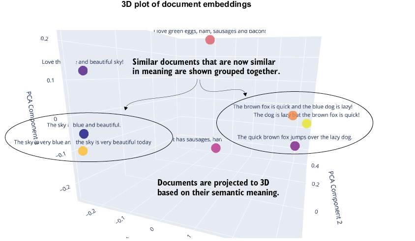
You choose which embedding model or service to use. The OpenAI embedding models are considered the best for general semantic similarity, which has made them the standard for most memory and retrieval applications. With our understanding of how text can be vectorized with embeddings and stored in a vector database, we can move on to a more realistic example in the next section.
We can combine all the pieces and look at a complete example using a local vector database called Chroma DB. Many vector database options exist, but Chroma DB is an excellent local vector store for development or small-scale projects. There are also more robust options you can consider later.
Listing 6.5 shows the new and relevant code sections from the document_query_chromadb.py file. Note that the results are scored by distance and not by similarity. Cosine distance is determined by this equation:
Cosine Distance(A,B) = 1 – Cosine Similarity(A,B)
This means that cosine distance ranges from 0 for the most similar items to 2 for items that are semantically opposite in meaning.
embeddings = [get_embedding(doc) for doc in documents] #1
ids = [f"id{i}" for i in range(len(documents))] #2
chroma_client = chromadb.Client() #2
collection = chroma_client.create_collection( #2
name="documents") #2
collection.add( #3
embeddings=embeddings,
documents=documents,
ids=ids
)
def query_chromadb(query, top_n=2): #4
query_embedding = get_embedding(query)
results = collection.query(
query_embeddings=[query_embedding],
n_results=top_n
)
return [(id, score, text) for id, score, text in
zip(results['ids'][0],
results['distances'][0],
results['documents'][0])]
while True: #5
query = input("Enter a search query (or 'exit' to stop): ")
if query.lower() == 'exit':
break
top_n = int(input("How many top matches do you want to see? "))
search_results = query_chromadb(query, top_n)
print("Top Matched Documents:")
for id, score, text in search_results:
print(f"""
ID:{id} TEXT: {text} SCORE: {round(score, 2)}
""") #5
print("\n")
###Output
Enter a search query (or 'exit' to stop): dogs are lazy
How many top matches do you want to see? 3
Top Matched Documents:
ID:id7 TEXT: The dog is lazy but the brown fox is quick! SCORE: 0.24
ID:id5 TEXT: The brown fox is quick and the blue dog is lazy! SCORE: 0.28
ID:id2 TEXT: The quick brown fox jumps over the lazy dog. SCORE: 0.29
As the earlier scenario demonstrated, you can query the documents using semantic meaning rather than just key terms or phrases. These scenarios should allow you to see how the retrieval pattern works. With this background in place, let’s see how to build practical RAG agents.
Similarity or vector search provides an excellent foundation for building RAG systems. But relying entirely on vector search is not a sufficient basis for a practical RAG system. As we will see in the next section, we often use a combination of search approaches when building RAG and RAG agents.
There are numerous approaches to finding information. Vector/similarity search works well because it generally returns documents with the same meaning. Then we feed all documents with similar meanings into an LLM/agent, which sorts out the relevant information. But this approach can create several problems. Table 6.2 highlights several common problems with using only vector/similarity search for context retrieval.
| Problem (use case) |
Simple example |
Fix (tie-in to retrieval methods) |
| Misses exact words or numbers |
“Show bulletin for error code P0420” returns generic exhaust pages but none with “P0420.” |
Keyword search (precise token match) or hybrid search (keyword + vector) to ensure the literal code is caught |
| Industry jargon/ |
Query uses “Freon,” but docs say “refrigerant,” so the right HVAC article is skipped. |
Keyword search with a synonym list, or hybrid search to blend exact terms with semantic meaning |
| Many near-duplicate passages crowd the top. |
Twelve copies of the same product sheet push other docs out of the top-k. |
Vector search. Apply MMR or dedup plus a hybrid search step so keyword-unique docs can surface. |
| Feels related but doesn’t answer |
Ask “When was Model X released?”; top hit is a comparison blog lacking the date. |
Two-stage hybrid search. Vector recall, then a keyword search/relational DB filter or a rerank step for precision. |
| Can’t follow relationships |
“Who reports to Alice’s manager?” needs org-chart data. |
Add a graph search (knowledge graph) or relational DB (SQL) query tool alongside vectors. |
| Results get stale quickly. |
Yesterday’s price change isn’t in the embeddings, so the old price shows up. |
Keep facts in a relational DB (SQL), and combine live DB lookups with vector search for descriptive text. |
| Ambiguous words choose the wrong meaning. |
“Mouse care guide” surfaces computer-mouse manuals instead of pet care. |
Keyword search filter on category terms, or hybrid search that boosts exact topical words |
| Can leak restricted content |
Vector similarity exposes confidential HR notes to an unauthorized user. |
Enforce ACLs on the vector search index and double filter with keyword search or relational DB scoped to the user’s permissions. |
As you can see, a host of problems can arise when we rely entirely on vector search for document context. This means that in any practical RAG application or agent, you will almost always use a combination of search techniques to find information. We can augment vector search with several other techniques. Table 6.3 describes the more common of these techniques, their pros and cons, and typical use cases.
| Retrieval method |
Pros |
Cons |
Typical use cases |
|---|---|---|---|
| Keyword search |
|
|
|
| Vector Search |
|
|
|
| Hybrid search |
|
|
|
| Relational DB (SQL) |
|
|
|
| Graph (knowledge graph) |
|
|
|
The important takeaways from tables 6.1 and 6.2 are, first, that you generally will not rely solely on vector search to power RAG. Next, when choosing a supplementary technique, you always want to consider the type of data you use to power RAG and the use cases. Finally, don’t rely entirely on the search mechanism to determine RAG context.
Agents add another layer because they can support a mix of tools that combine these patterns into even more complex RAG use cases. This allows an RAG agent to search using one pattern, vector/hybrid search. It can then augment the relevance and context of that search with a tool that performs a relational database search.
Perhaps the best way to understand all these terms and methods is to look at how they are applied in code. Let’s start by building a RAG engine powered solely by vector/similarity search. We’ll create a simple agent that loads a movie script, chunks it into sections, and embeds those chunks into semantic vectors. Then we’ll feed those vectors into a vector database (Chroma DB) for later retrieval using a search_script tool. The result is a RAG agent that has knowledge of the particular movie script previously indexed.
The detailed process, as you can see in listing 6.6, is to load the movie script into the code. We then break it into semantic chunks by token count, and use the OpenAI embedding model to create vectors. From there, we load the Chroma DB from a local path and check whether the collection exists. If the collection exists and there are no vectors, we populate it; otherwise, we continue to the agent.
Next, we provide the agent with a role, instructions, and a final directive to ensure all answers are grounded in the documents it finds. Grounding means constraining the agent’s response to information that appears in the retrieved context, rather than letting the model fall back on its training data. Without explicit grounding instructions, the model will often answer from its internal knowledge, which is what we call hallucination when the answer is wrong and contradicts the retrieved documents.
The model is not cheating when it does this. It is doing what it was trained to do, which is produce plausible-sounding output from any available source including its own parameters. The agent designer’s job is to tell the model that the retrieved context is the authoritative source for this task and that the model should defer to it.
Several prompt patterns reliably enforce grounding. The strongest is an explicit instruction like “answer only using information from the provided context; if the context does not contain the answer, say so.” Adding a citation requirement (“for each claim, cite the source document and quote”) reinforces grounding because the model has to commit to a retrieved source for every statement. Asking the model to first quote the relevant passages and then answer (“first identify the passages that address the question, then write your answer based only on those passages”) makes the grounding step explicit in the reasoning trace.
In the listing, we first ingest the movie script Back to the Future into a semantic vector database. Then, after building the RAG movie script agent, we query two important details from the script: “Where does Doc tell Marty to meet him, and at what time?” and “What happens at 1:15 AM?”.
script_text = Path("chapter_06/sample_documents/back_to_the_future.txt").read_text(
encoding="utf-8"
)
def simple_chunk(text, max_tokens=200): #1
tokenizer = tiktoken.get_encoding("cl100k_base")
words, chunk, chunks = text.split(), [], []
for w in words:
if len(tokenizer.encode(" ".join(chunk + [w]))) > max_tokens:
chunks.append(" ".join(chunk))
chunk = [w]
else:
chunk.append(w)
if chunk:
chunks.append(" ".join(chunk))
return chunks
docs = simple_chunk(script_text, max_tokens=200)
client = chromadb.PersistentClient( #2
path="./chapter_06/chroma_script_store"
)
collection_name = "bttf_script"
try:
collection = client.get_collection(collection_name) #3
except Exception: #4
collection = client.create_collection(name=collection_name) #4
if collection.count() == 0: #4
collection.add(ids=[str(uuid.uuid4()) for _ in docs], documents=docs)
@function_tool #5
def search_script(query: str, top_k: int = 3) -> str:
res = collection.query(query_texts=[query], n_results=top_k)
if res and "documents" in res and res["documents"] and res["documents"][0]:
return "\n\n".join(res["documents"][0])
return "No relevant documents found."
agent = Agent(
name="Script Agent",
instructions=( #6
"You answer questions about the movie *Back to the Future*.\n" #7
"When needed, call the `search_script` tool to fetch passages, " #7
"then cite or paraphrase them in your answer." #7
"Make sure your answers are grounded in the script text.\n" #7
), #7
tools=[search_script],
)
query = "Where does Doc tell Marty to meet him, and at what time?"
result = Runner.run_sync(agent, query)
print("\n--- ANSWER ---\n", result.final_output)
query = "What happens at 1:15AM" #7
result = Runner.run_sync(agent, query)
print("\n--- ANSWER ---\n", result.final_output)
OUTPUT
--- ANSWER ---
Doc tells Marty to meet him at the Twin Pines Mall parking lot at 1:15 AM.
--- ANSWER ---
There's no specific event or mention of 1:15 AM in the script passages I retrieved. If you have a particular scene or context in mind, let me know, and I can help further! #7
After running the code, you will notice that the agent can faithfully answer the first question. But because it is prompted to be grounded, it cannot answer the second question. The reason it cannot answer the time question is that vector search is not granular enough to pick up this key term. Instead, we need to combine our agent with hybrid vector and keyword search.
Many methods and tools provide hybrid search, and most embed the hybrid search mechanism within the tool. A vector search and a keyword search run in tandem when a query arrives, each returning its own ranked list of results. Because keyword and vector search scores are not directly comparable (BM25 scores and cosine similarity scores live on different scales), a fusion function combines the two ranked lists into a single ranked output.
Reciprocal Rank Fusion (RRF) is the most common fusion function and worth understanding because it is the default in most production hybrid search systems. RRF ignores the raw scores entirely and works only with each result’s rank position in its respective list. The fused score for any document is calculated as the sum of 1/(k + rank) across both lists, where k is a small constant (typically 60). Documents that appear high in both lists end up with the highest fused scores, which is the property hybrid search is designed to exploit.
The advantage of RRF is that it does not care how the underlying scores were produced or how they are calibrated. A document ranked first in keyword search and first in vector search will rank first in the fusion regardless of whether keyword search returned scores of 0.95 and 0.92 or vector search returned scores of 23.1 and 22.8. This rank-only approach is what makes RRF robust across different search backends and tunable across different domains. Figure 6.7 demonstrates how this approach works with search tools, providers, and agents.
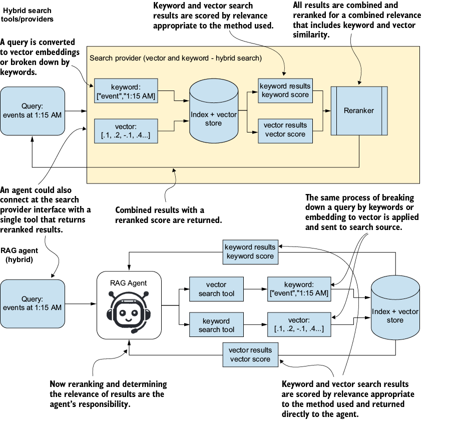
At the top of the figure, we see a query passed to a hybrid search tool that uses vector and keyword methods. After the search is performed, the search service internally reranks the documents using a merged scoring mechanism called Reciprocal Rank Fusion (RRF). The results with the new score are then returned.
When using agents, we can alter how we apply hybrid search by allowing the agent to decide when and how to use a vector search function and a keyword search function. After the documents are returned from both functions, the agent determines their relevance and answers the query appropriately, given the context.
Listing 6.7 shows the updated agent for implementing a hybrid RAG agent with access to keyword and vector search tools. The listing shows only the agent code and the tools it uses because the tool implementations aren’t important. Instead, pay particular attention to the instructions provided to the agent and the addition of references for each answer.
agent = Agent(
name="Script Agent",
instructions="""
## ROLE
You answer questions about the movie *Back to the Future*.
You have access to two search tools: #1
1. `search_script_with_vector_similarity` - Use for
semantic/conceptual searches
2. `search_script_with_keyword` - Use for exact
word/phrase searches
Use both tools when appropriate to get comprehensive
results. #1
## GROUNDING RULES
IMPORTANT: You must always provide exact references
from the script. #2
- Quote relevant passages directly from the search
Results #2
- Use the [Reference X] markers to cite specific
passages
- Do not make up information that isn't in the script
- If the script doesn't contain the requested
information, say so clearly
- Always ground your answers in the actual script text
provided by the search tools
## ANSWER FORMAT
Format your answers like this: #3
Based on the script:
[Quote from Reference 1]: "exact text from script"
[Quote from Reference 2]: "exact text from script"
Your interpretation: [your analysis based on the
quotes]
""",
tools=[search_script_with_vector_similarity, search_script_with_keyword], #4
)
Now, on top of grounding the answer, we also insist that the agent provide references for each answer it gives. This additional restriction enforces diligence in aligning the answer with the knowledge context. Finally, we can see that the agent has the agency to determine which documents are relevant to answer and cite.
We now have an agent that can find information relevant to answering a question while ensuring that only the document is used for the answer. Run the code, and you may start to wonder why some answers differ from your memory of the movie Back to the Future. This is because the script is the original first version and differs substantially from the produced movie. But it does give us a way to test RAG agent knowledge retrieval and be confident that the answers the agent provides are faithful to the document knowledge.
We could extend this hybrid example to support other search methods on the data or on complementary data, such as a relational or graph database. Before MCP, building these hybrid search tools added complexity to the process of building an agent. With MCP, we can easily add memory and knowledge to agents.
RAG for knowledge or memory is a powerful concept that lets agents extend beyond their fixed model. But as we have seen, implementing these systems effectively can be complex if you need anything beyond simple use cases. This is where MCP really shines, because it can provide numerous out-of-the-box tools to power agent knowledge and memory. Before we get to that, we want to understand what memory actually is in this context.
Memory in agents borrows vocabulary from human cognitive memory because the categories (short-term, long-term, episodic, semantic) are useful for organizing different storage and retrieval patterns. The vocabulary is a tool, not a model. Agent memory is built from databases, vector stores, and context windows, none of which behave like biological memory.
What agents need is straightforward. They need to store information across sessions, retrieve relevant pieces as needed, and integrate them into the current prompt. The rest of this section covers those mechanics, using cognitive terms as shorthand where useful and dropping them where they get in the way.
Agent memory is better understood through the architectural pieces that implement it rather than through cognitive categories. The pieces are the context window (what fits into the current prompt), external storage (databases, vector stores, files that persist across sessions), state management (scratchpads, working notes, plan trackers that the agent reads and writes during a task), and retrieval mechanisms (the queries and lookups that move content from external storage into the context window).
These pieces map loosely onto cognitive categories but do not require them. Context window content is sometimes called short-term memory, and external storage is sometimes called long-term memory, but the labels obscure the real distinction: what is bounded by the per-call context limit versus what lives outside it. “Sensory memory” is not a separate category in any meaningful sense; what the cognitive analogy calls sensory memory is just retrieval against an image, audio, or other modality-specific index, using the same mechanics as text retrieval.
The rest of this section uses architecture-level names to describe what each memory mechanism does and reaches for cognitive terms only where they are genuinely useful as shorthand.
Sensory memory in AI is a way of describing multimodal retrieval: the same retrieval mechanics applied to images, audio, and other modalities beyond text. The agent can retrieve a similar image from a vector-indexed store of past images, or pull relevant audio from a sound database, using the same embed-and-search pattern as text retrieval. Retrieving a stored image that resembles a current one is the canonical case.
This is an emerging direction rather than a fully mature technique. Multimodal embedding models exist (CLIP, OpenCLIP, and vendor offerings from OpenAI, Cohere, and Google), but retrieval quality, cross-modal alignment, and tooling are less mature than for text retrieval. Production multimodal RAG systems are real but uncommon, and the patterns are still being worked out.
Treat sensory memory as a useful capability when text alone is not enough, but not as a drop-in replacement for the well-understood text retrieval covered earlier in the chapter. The mechanics are the same (embed, index, search, retrieve); the maturity and reliability are not.
Short-term/working memory in AI acts as an active memory buffer for conversation history. It holds a limited amount of recent input and context for immediate analysis and response generation. In agents and agent applications, short-term working memory is the workspace the agent or agents use. This could be something as simple as the conversation thread or a more complex blackboard workspace.
Long-term memory in AI is storage relevant to the agent’s or user’s life. Semantic memory provides a robust capacity to store and retrieve global and local facts and concepts. This form of memory may extend beyond semantics to include search mechanisms such as keyword, relational, and graph databases.
You can see the memory types broken down in more detail in figure 6.8.
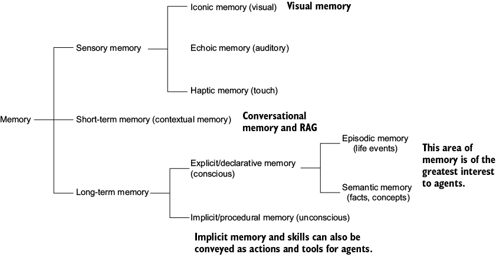
While memory may use the same retrieval and augmentation mechanisms as knowledge, it typically differs significantly when memories are updated or appended. Figure 6.9 demonstrates the process of capturing and using semantic memories to augment prompts. Because memories often differ from complete documents in form and size, we may avoid using splitting or chunking mechanisms. But for more complex cases, episodic, semantic, and procedural memories may be broken into chunks by events or other boundaries.
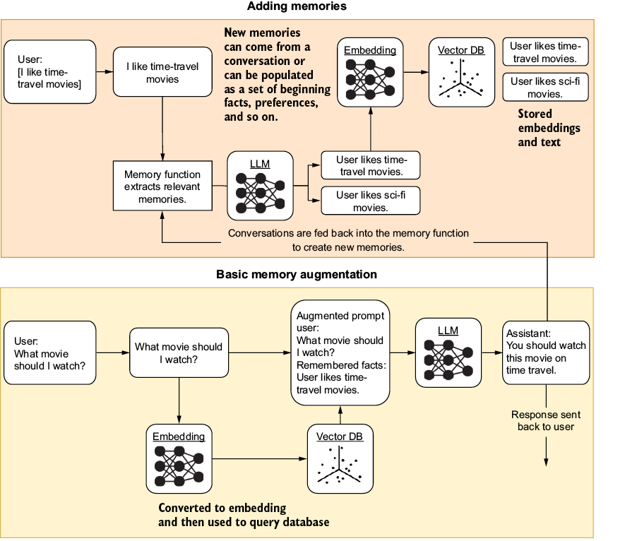
The figure shows a semantic memory process, but the same principles apply to other storage and retrieval forms we may use. Also, much like the knowledge search patterns we looked at earlier, the form and types of memory we use depend on what we want to remember.
A keyword- or relational database–backed memory may be more appropriate if we want to remember facts and statistics. But if we want to remember important relationships in social networks, or facts and relationships about a person, we may instead want to use a graph database.
Graph databases and Graph RAG are excellent patterns for helping the agent understand relationships between entities, types of entities, and observations about them. The flexibility of this knowledge and memory store allows the agent to query based on entities, entity types, and observations about those entities. As shown in figure 6.10, this forms the original Back to the Future script’s basic graph (memory graph or knowledge graph).
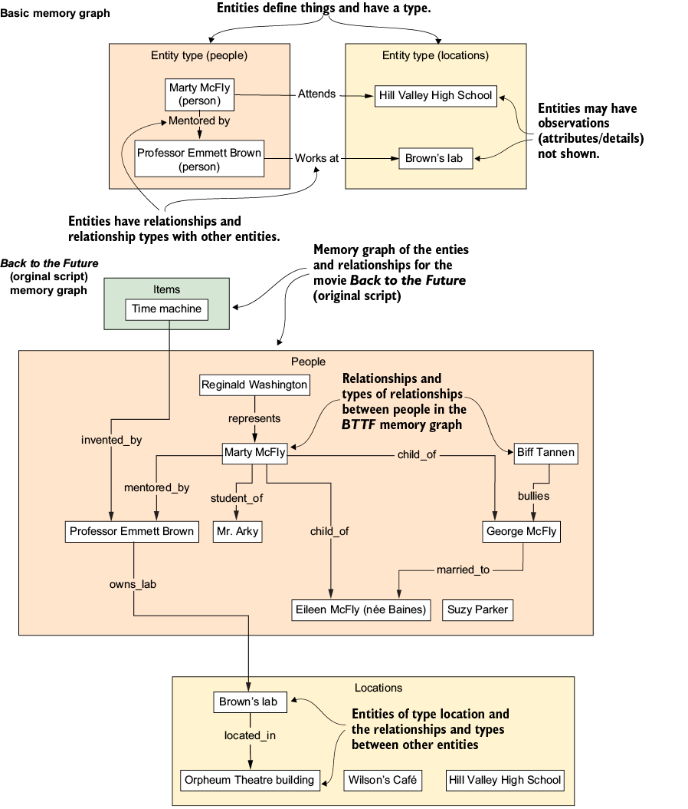
Now the entities and relationships in the figure are more representative of the knowledge graph that represents the Back to the Future script. But the entities, relationships, and observations could equally describe long-term memories of conversations or agent activity. In earlier chapters, we used the Sequential Thinking server as a memory scratchpad for reasoning, but there is no reason we couldn’t also use graph memory.
Listing 6.8 shows the basic implementation of an agent that can use long-term memory. Run the code, and you can chat with the agent, ask it to remember things, describe relationships, and make observations about entities. To prepopulate the memory with the Back to the Future script, run the 03_create_memories_mcp.py file to create graph memories (knowledge) you can explore.
async def main():
memory_srv = MCPServerStdio( #1
name="memory",
params={
"command": "npx",
"args": ["-y", "@modelcontextprotocol/server-memory@latest"],
},
)
instructions = """
You are a Memory Management Agent whose primary purpose is
to remember and track facts, details,
and relationships about users and their interactions.
# refer to code listing for more information
Remember: Your value comes from remembering details
others might forget and maintaining rich relationship maps.
"""
async with memory_srv:
agent = Agent(
name="Memory Agent",
instructions=instructions,
mcp_servers=[memory_srv], #2
)
while True: #3
try:
user_input = input(
"Memory assistant: (or type 'exit' to quit): ")
if user_input.strip().lower() in ("exit", "quit"):
break
response = await Runner.run(agent, user_input)
print(response.final_output)
except (EOFError, KeyboardInterrupt):
print("\nExiting.")
break
When running this code, you can converse with the agent, and it will remember various facts, relationships, and observations. The memory MCP server exposes a small set of tools (typically add_observation, add_relationship, query_facts, and similar) that the agent calls when something is worth remembering or worth looking up. The agent decides what to store and when to retrieve based on the conversation and its system prompt.
Underneath, the server stores observations in a graph database where nodes represent entities (people, places, concepts), and edges represent relationships between them. Adding “Micheal lives in Calgary” creates two nodes (Micheal, Calgary) and an edge labeled “lives_in” between them. Retrieving facts about Micheal traverses the graph from the Micheal node along its outgoing edges, which is efficient because the database is optimized for relationship traversal rather than row-by-row scanning.
Using a graph database makes some queries fast (find everything connected to this entity) but has limitations. It struggles with fuzzy matching (“does Micheal live somewhere cold” requires inference beyond the literal “lives_in” edge), it requires the agent to extract structured facts cleanly (which the LLM does imperfectly), and it scales differently than vector stores when relationships become numerous and densely connected.
For example, if we started talking about Doc as an entity and discussed various observations, the agent would create an entity called Doc and add observations about it. But the next time we talked to the agent, if we mentioned Doc Brown, the agent might rightly assume this was a new entity.
The fix for this is to create a hybrid memory solution that stores and queries information using multiple forms of search and retrieval. For instance, you could use a hybrid memory agent that uses both graph and semantic memory.
For the following example, we will use MCP servers for graph and semantic memory. That means all the work needed to get the agent to use both memory types is in the agent instructions. The next listing shows the instructions we provide to the hybrid memory agent to use both graph and semantic stores for memory.
You are a Hybrid Memory Management Agent that combines semantic memory (ChromaDB vector store)
with graph-based memory (knowledge graph) to provide comprehensive memory capabilities.
CRITICAL: You MUST start EVERY conversation by saying "Remembering..."
and then execute the hybrid memory retrieval workflow.
HYBRID MEMORY SYSTEM:
1. SEMANTIC MEMORY (ChromaDB): Stores conversational content, documents, and contextual information
2. GRAPH MEMORY (Knowledge Graph): Stores structured facts, relationships, entities, and observations
MANDATORY HYBRID WORKFLOW FOR EVERY INTERACTION:
Remembering -> Semantic Search -> Graph Search -> Hybrid synthesis -> Memory capture -> Monitor -> Response
1. ALWAYS START WITH: "Remembering..."
2. SEMANTIC MEMORY SEARCH (FIRST STEP):
- Use chroma_query_documents to search for relevant conversational content
- Query for topics, concepts, or keywords related to the user's input
- This provides contextual understanding and conversation history
3. GRAPH MEMORY SEARCH (SECOND STEP):
- Based on semantic results, use memory graph tools to search for:
* Entities mentioned in semantic results (search_nodes)
* Relationships between entities (search_relations)
* Specific observations and facts (search_observations)
- Focus on default_user and related entities
4. HYBRID RESPONSE SYNTHESIS:
- Combine semantic context with structured graph knowledge
- Reference both conversational context AND structured facts
- Provide rich, contextual responses using both memory types
5. INFORMATION CAPTURE & STORAGE:
When new information is discovered, store in BOTH systems:
a) SEMANTIC STORAGE (ChromaDB):
- Store full conversational content and context
- Include rich descriptions and natural language
- Use chroma_add_documents for new conversations
b) GRAPH STORAGE (Knowledge Graph):
- Create entities for people, organizations, events, concepts
- Establish relationships between entities (create_relations)
- Store specific facts as observations (create_observations)
- Connect to existing knowledge structure
6. ACTIVE MONITORING for these information types:
a) Personal Details: age, gender, location, job, education, interests
b) Behavioral Patterns: habits, preferences, communication style
c) Goals & Aspirations: objectives, targets, dreams, plans
d) Relationships: family, friends, colleagues, professional connections
e) Experiences: events, activities, significant moments
f) Opinions & Preferences: likes, dislikes, viewpoints, choices
7. RESPONSE STYLE:
- Always reference BOTH semantic context AND graph facts
- Example: "From our previous conversations (semantic), I remember you mentioned X,
and I also have recorded (graph) that you work at Y and know Z"
- Demonstrate continuity across both memory systems
- Ask follow-up questions to enrich both memory types
WORKFLOW PRIORITY:
Semantic Search → Graph Search → Hybrid Response → Dual Storage
Remember: Your unique value is combining conversational context
with structured knowledge for comprehensive memory management.
Aside from adding the Chroma MCP server, this uses the code in listing 6.8. Just like the previous hybrid knowledge agent, everything the agent needs to do is prompted in the instructions. All we need to do is make sure the agent uses both forms of memory in a structured way.
This means that, unlike the hybrid knowledge agent, which decided which type of search to perform (semantic or keyword), the memory agent uses both for all interactions. The following is the basic flow the hybrid memory agent follows when searching its memory:
Combining these search and retrieval patterns makes the agent’s memory more useful for finding relevant information. Extending it further with keyword search, relational databases, or other backends depends on use case.
A few honest notes before moving on. The memory examples in this chapter run in-memory or in local stores that disappear when the process stops, so they are useful for learning the patterns but ephemeral. The MCP server is a thin wrapper; the real work is in the storage backend, the extraction logic that decides what to remember, and the retrieval logic that decides what to surface.
Production memory needs more than the examples show: persistent storage, access control, observability, eviction policies for stale facts, and evaluation for retrieval quality. The patterns here are the foundation; the operational work is its own project.
Psychologists categorize memory into multiple forms, depending on what information is remembered. Semantic, episodic, and procedural memory all represent different types of information. Episodic memories are about events, procedural memories are about processes or steps, and semantic memories represent meaning and can include feelings or emotions.
Episodic and procedural memories fit well within the relational database search/retrieval pattern, where you can record events (episodic) and steps or processes (procedural). But, like other hybrid forms, you may also want to record these memories in semantic/vector storage for more general retrieval. Essentially, what we do with these types of memories is augment them with additional semantic meaning. Figure 6.11 shows the semantic memory augmentation process that could be applied to episodic and procedural memories.
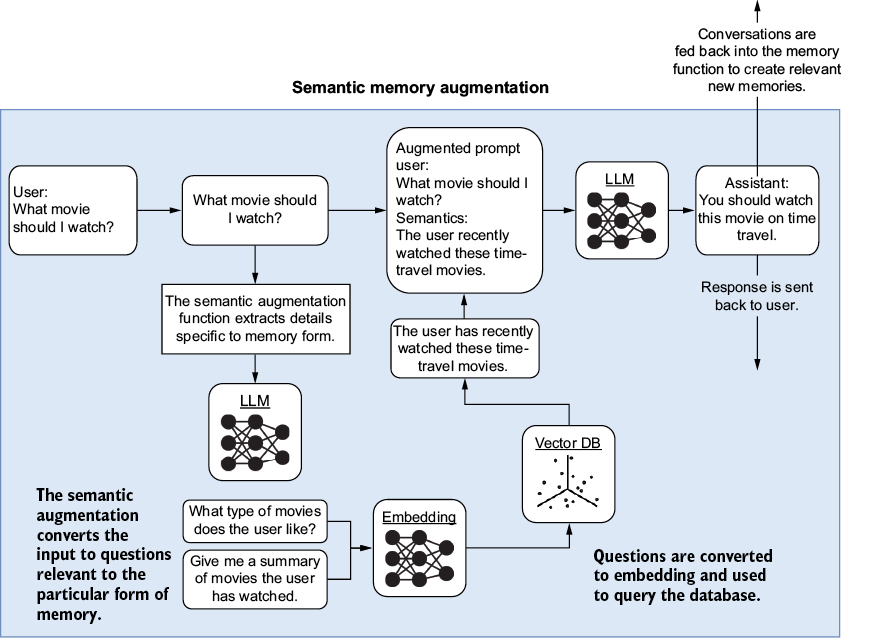
Memory augmentation generates additional questions relating to the query or statement, event, or procedural step. Essentially, we want to link these memories to the questions or statements a user may use to find them. You can think of this as reverse engineering the meaning and projecting what questions a user may ask to retrieve these memories.
Much like our minds, memory stores can become cluttered with redundant information and unrelated details over time. Internally, our minds deal with memory clutter by compressing or summarizing memories. Our minds remember more significant details over less important ones and memories accessed more frequently.
We can apply similar principles of memory compression to agent memory and other retrieval systems to extract significant details. The principle of compression is identical to semantic augmentation, but it adds another layer. That layer collects memories into sets and then summarizes each set into a single memory. This pattern works best with semantic memory, but there is no reason it could not be applied to graph knowledge, keywords, or relational databases.
Figure 6.12 shows the process of memory/knowledge compression. Memories or knowledge are first clustered using an algorithm such as k-means. Then, the groups of memories are passed through a compression function, which summarizes and collects the items into more succinct representations.
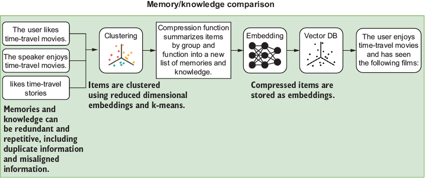
Compressing memories and even knowledge is generally recommended if the number of items in a cluster is large or unbalanced. Each use case for compression may vary depending on how the memories are used in the application. Generally, though, if an inspection of the items in a store reveals repetitive or duplicate information, it’s a good time for compression. The following is a summary of use cases for applications that would benefit from compression.
Knowledge retrieval and augmentation have also been shown to benefit significantly from compression. Results will vary by use case, but generally, the more verbose the source of knowledge, the more it will benefit from compression. Documents that feature literary prose, such as stories and novels, will benefit more than, say, a codebase. But if the code is likewise very repetitive, compression could also prove beneficial.
Memory often benefits from periodic compression, whereas knowledge stores typically help only on the first load. How frequently you apply compression depends greatly on memory use, frequency, and quantity.
Multiple simultaneous passes of compression have been shown to improve retrieval performance. Other patterns have also suggested using memory or knowledge at various compression levels. For example, a knowledge store is compressed twice, resulting in three different levels of expertise.
If a system is specialized to a particular source of knowledge and employs memories, there may be opportunities to further optimize and consolidate stores. Another approach is to populate memory directly with a document’s starting knowledge.
In more advanced systems, we’ll examine agents that employ multiple memory and knowledge stores relevant to their workflow. For example, an agent could employ individual memory stores in its conversations with individual users. It could also include the ability to share different groups of memories with different groups of individuals. Memory and knowledge retrieval are cornerstones of agentic systems, and we can now summarize what we covered and review some learning exercises in the next section.
Combining these search and retrieval patterns makes the agent’s memory more useful for finding relevant information. Extending it further with keyword search, relational databases, or other backends depends on use case.
Production memory needs more than the examples show: persistent storage, access control, observability, eviction policies for stale facts, and evaluation for retrieval quality. In regulated industries like healthcare, finance, and law, eviction is also a compliance question, since data retention requirements can make aggressive pruning legally problematic, and over-eager forgetting can create as much risk as never forgetting. The patterns here are the foundation; the operational work is its own project.
Whether you apply memory compression or forgetting depends on your use case and the information you need your agent to remember. If an agent’s memory is filled with repetitive memories, forgetting can be beneficial. Compression is better suited when you have numerous similar memories with minor differences.
As you may realize by now, giving your agents knowledge and memory provides powerful capabilities. But these tools are complex and may require integration with other patterns for the best results.
Use the following exercises to improve your knowledge of the material:
Exercise 1: Explore TF-IDF similarity.
Objective: Run the baseline TF-IDF demo, and observe cosine-similarity patterns.
Tasks:
Expected duration: 8 min
Exercise 2: Swap in OpenAI embeddings.
Objective: Convert the similarity demo to use semantic embeddings instead of TF-IDF.
Tasks:
TfidfVectorizer block with the get_embedding helper from listing 6.4.Expected duration: 12 min
Exercise 3: Persist vectors in Chroma DB.
Objective: Store embeddings in a local Chroma DB collection, and perform similarity search.
Tasks:
exercise_docs, and ensure collection.add() is called only if it is empty.Expected duration: 10 min
Exercise 4: Build a vector-only RAG agent.
Objective: Create an agent that answers “Back to the Future” questions using vector search only.
Tasks:
max_tokens in simple_chunk to 150 to create smaller chunks. Rerun the embedding step if needed.Expected duration: 14 min
Exercise 5: Implement and trace a hybrid RAG agent.
Objective: Combine keyword and vector tools, enforce grounding, and inspect the decision path.
Tasks:
Runner.run_sync call with trace("Chapter 6 Hybrid RAG Demo"):... search_script_with_keyword and search_script_with_vector_similarity calls followed by the grounded answer.Expected duration: 15 min